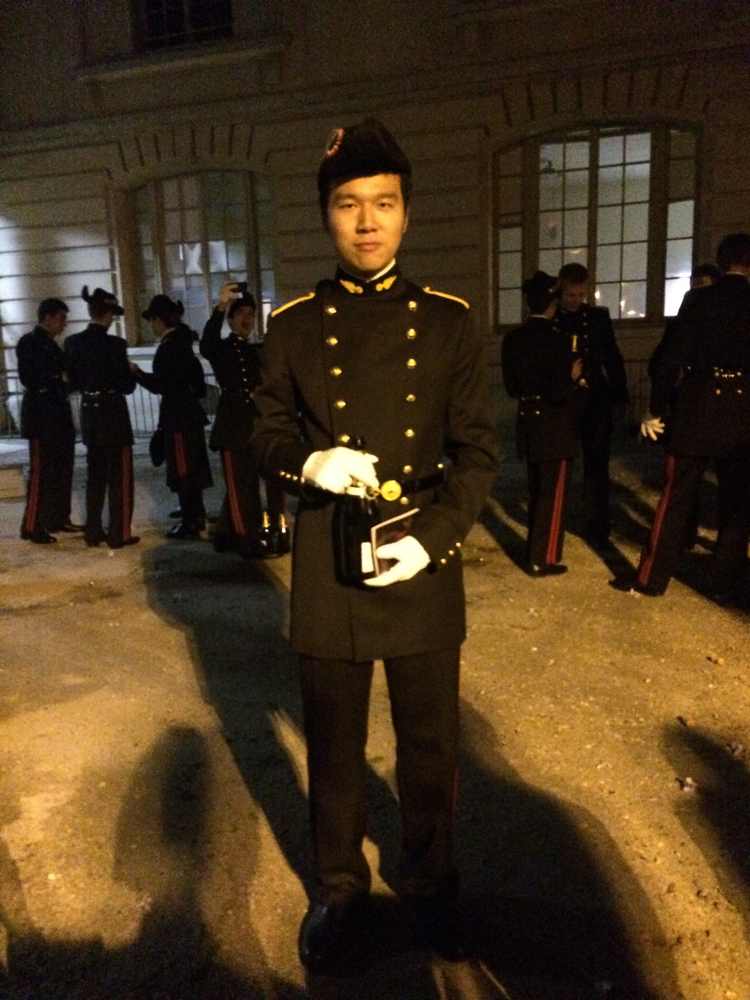
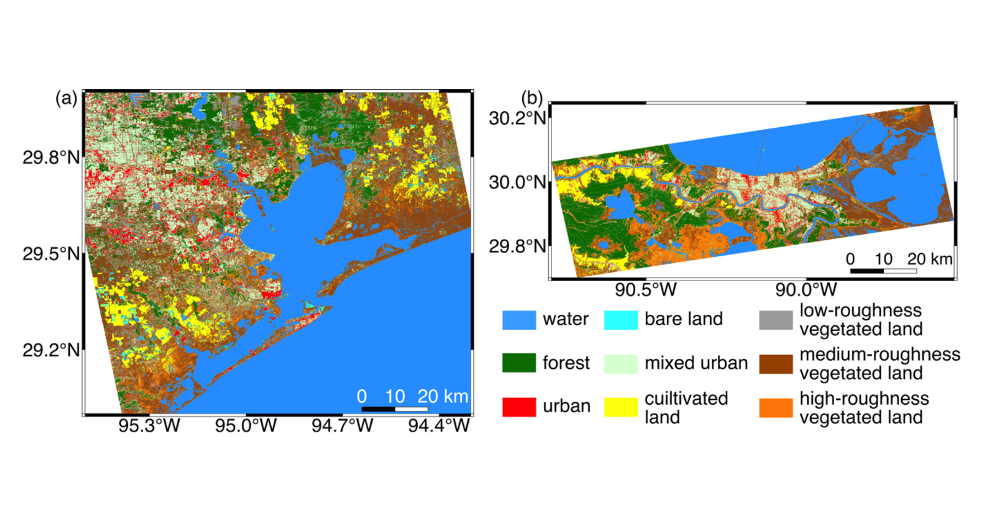
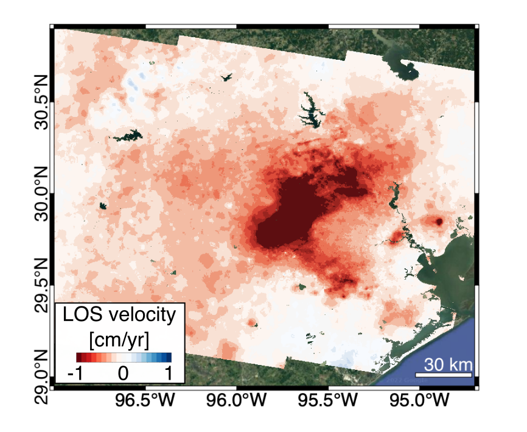
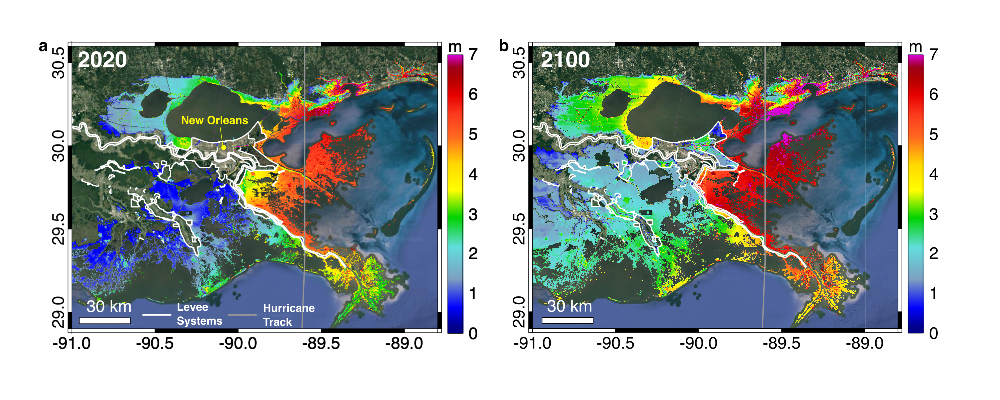
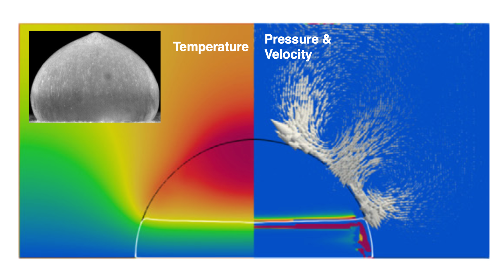

I am currently a graduate student in the Department of Aerospace Engineering and Engineering Mechanics at the University of Texas at Austin. I received my M.S. degree in engineering from École Polytechnique in 2018 and my B.S. degree in physics from Nanjing University in 2015. I am interested in advancing the Interferometric Synthetic Aperture Radar (InSAR) technique and promoting its applications in Earth observations. My research is motivated by geophysical problems that have significant environmental and societal impacts and usually cross disciplinary boundaries. In my opinion, working on these science- and application-based problems is the best way to develop novel InSAR processing techniques and to learn new techniques on remote sensing, machine learning, theoretical/numerical modeling, and field survey.




